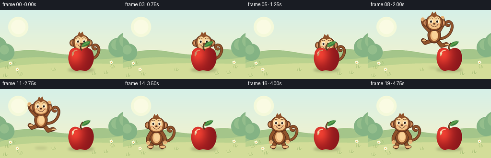
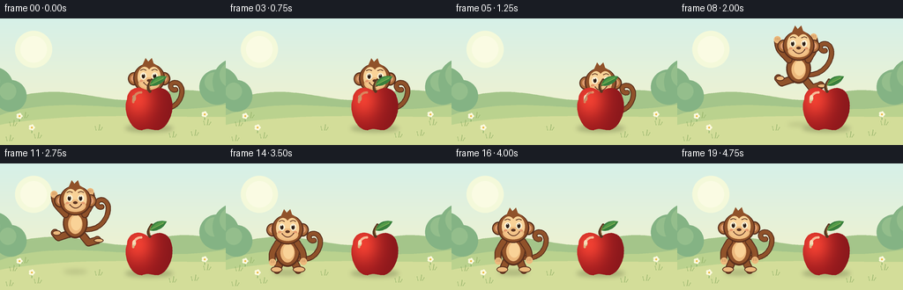
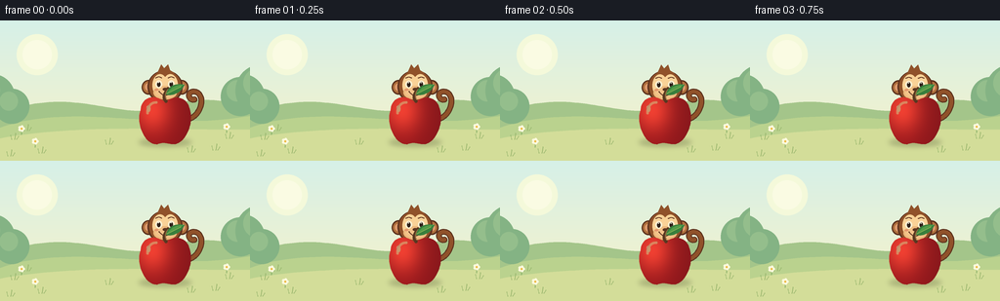

CODING AGENTS AS PIXEL WORLD MODELS
traex/GPT-6.1-Sol · dynamic_spatial_relationship_0053
点击播放 · 原生 RGB 像素
逐轮保存的候选
回放视频、检查图与代码变化。
每份候选均可单独播放。实际图片检查记录在下方工具轨迹中。
候选 01播放与检查图
点击播放 · 原生 RGB 像素

展开代码变化
--- 上一保存版本
+++ 本次保存版本
@@ -0,0 +1,168 @@
+from pathlib import Path
+import math
+import numpy as np
+from PIL import Image, ImageDraw, ImageFilter
+import artifact_io
+
+ROOT = Path(__file__).resolve().parent
+S = 4
+W,H = 256,144
+
+def bezier(points, n=40):
+ p=np.array(points,float)
+ if len(p)==4:
+ return [tuple((1-t)**3*p[0]+3*(1-t)**2*t*p[1]+3*(1-t)*t*t*p[2]+t**3*p[3]) for t in np.linspace(0,1,n)]
+ return [tuple((1-t)**2*p[0]+2*(1-t)*t*p[1]+t*t*p[2]) for t in np.linspace(0,1,n)]
+
+def poly(d,pts,fill): d.polygon([(int(x*S),int(y*S)) for x,y in pts],fill=fill)
+def line(d,pts,fill,width):
+ pts=[(int(x*S),int(y*S)) for x,y in pts]
+ d.line(pts,fill=fill,width=max(1,int(width*S)),joint='curve')
+ r=width*S/2
+ for x,y in [pts[0],pts[-1]]:d.ellipse((x-r,y-r,x+r,y+r),fill=fill)
+def ell(d,box,fill):d.ellipse(tuple(int(z*S) for z in box),fill=fill)
+def shadow(im,x,y,rx,ry,alpha):
+ sh=Image.new('RGBA',im.size)
+ ell(ImageDraw.Draw(sh),(x-rx,y-ry,x+rx,y+ry),(59,67,31,alpha))
+ im.alpha_composite(sh.filter(ImageFilter.GaussianBlur(2.5*S)))
+
+# A quiet, sunny garden. All scene objects are hand-drawn geometry.
+yy,xx=np.mgrid[0:H*S,0:W*S]
+t=np.clip(yy/(H*S),0,1)[...,None]
+c=np.array([214,240,232])*(1-t)+np.array([249,243,199])*t
+background=Image.fromarray(c.astype(np.uint8),'RGB').convert('RGBA')
+d=ImageDraw.Draw(background)
+ell(d,(17,14,59,56),(244,249,218))
+ell(d,(23,20,53,50),(250,251,227))
+poly(d,[(0,98)]+bezier([(0,96),(70,66),(119,101),(160,91)])+bezier([(160,91),(210,72),(240,88),(256,85)])+[(256,144),(0,144)],(164,197,138))
+poly(d,[(0,110)]+bezier([(0,110),(77,83),(162,115),(256,98)])+[(256,144),(0,144)],(186,210,142))
+poly(d,[(0,121)]+bezier([(0,121),(80,106),(177,113),(256,112)])+[(256,144),(0,144)],(211,221,153))
+# Delicate garden silhouettes confined to the edges.
+for x,y,r in [(-8,78,23),(12,88,18),(246,78,20),(268,72,27)]:
+ ell(d,(x-r,y-r,x+r,y+r),(132,179,132))
+ ell(d,(x-r*.7,y-r*.83,x+r*.35,y+r*.25),(148,190,140))
+for x,y in [(15,122),(28,113),(235,121),(221,133),(43,136),(11,139),(112,127),(196,135)]:
+ line(d,[(x-3,y),(x-4,y-4)],(143,176,103),.7)
+ line(d,[(x,y),(x+1,y-6)],(147,177,104),.8)
+ line(d,[(x+2,y),(x+4,y-3)],(150,180,108),.7)
+for x,y in [(22,117),(232,115),(36,130)]:
+ line(d,[(x,y),(x,y-5)],(128,170,100),.8)
+ for a in np.linspace(0,math.tau,6)[:-1]:
+ ell(d,(x+2*math.cos(a)-1.5,y-6+2*math.sin(a)-1.5,x+2*math.cos(a)+1.5,y-6+2*math.sin(a)+1.5),(251,249,221))
+ ell(d,(x-1,y-7,x+1,y-5),(238,183,64))
+
+# The apple is a fixed foreground object: a curved heart-like silhouette,
+# softly modeled with ruby edges, a golden reflection, a stem, and one leaf.
+apple=Image.new('RGBA',(W*S,H*S))
+amask=Image.new('L',apple.size)
+ad=ImageDraw.Draw(amask)
+pts=[]
+for seg in [ [(169,84),(159,75),(145,78),(144,92)],[(144,92),(139,105),(148,128),(161,127)],[(161,127),(169,124),(171,127),(179,127)],[(179,127),(191,125),(199,104),(194,90)],[(194,90),(191,78),(178,76),(169,84)] ]:
+ pts += bezier(seg)
+poly(ad,pts,255)
+x=xx/S;y=yy/S
+light=np.exp(-((x-156)/19)**2-((y-92)/23)**2)
+edge=np.clip((x-165)/35,0,1)
+red=151+89*light-16*edge
+green=24+40*light
+blue=28+22*light
+rgb=np.stack([red,green,blue],-1).clip(0,255).astype(np.uint8)
+apple=Image.fromarray(rgb,'RGB').convert('RGBA');apple.putalpha(amask)
+da=ImageDraw.Draw(apple)
+line(da,bezier([(151,95),(151,88),(155,84),(160,84)]),(255,159,120,170),2.5)
+ell(da,(150,87,154,94),(255,202,159,140))
+line(da,bezier([(170,83),(166,79),(169,74),(172,70)]),(88,56,33),3.1)
+line(da,bezier([(170,80),(169,77),(170,73),(172,71)]),(153,111,62),1.1)
+leaf=bezier([(170,76),(173,64),(184,65),(189,66)])+bezier([(189,66),(185,75),(176,78),(170,76)])
+poly(da,leaf,(56,127,61))
+poly(da,bezier([(171,75),(177,66),(184,66),(188,66)])+[(171,75)],(82,155,72))
+line(da,[(171,75),(185,68)],(151,183,90),.8)
+
+
+def monkey(im,x,base,jump=0,crouch=0,settle=0,time=0):
+ # Local coordinates make the face, limbs and tail follow one coherent jump.
+ layer=Image.new('RGBA',im.size);d=ImageDraw.Draw(layer)
+ def p(a,b): return (x+a,base+b)
+ def E(box,col):ell(d,(x+box[0],base+box[1],x+box[2],base+box[3]),col)
+ def L(pts,col,w):line(d,[p(*q) for q in pts],col,w)
+ def B(pts,col,w): L(bezier(pts),col,w)
+ dark=(91,48,29);fur=(144,82,42);light=(175,111,60);tan=(237,185,124);cream=(249,210,151)
+ bob=math.sin(time*2)*.5 if not jump else 0
+ head=-51+crouch*5+settle*2+bob
+ body=-25+crouch*3+settle*2
+ # A long unmistakable curled monkey tail.
+ sweep=jump*8
+ tail=bezier([(10,body+7),(38,body+15-sweep),(45,body-21-sweep),(29,body-21-sweep)])+bezier([(29,body-21-sweep),(21,body-20-sweep),(25,body-11-sweep),(30,body-13-sweep)])
+ L(tail,dark,6);L(tail,fur,4.1)
+ # Back legs bend in flight and in anticipation.
+ if jump>0:
+ legs=[[(-7,body+12),(-19,-9),(-23,-14)],[(7,body+12),(15,-3),(25,-6)]]
+ feet=[(-26,-17,-16,-11),(21,-8,32,-3)]
+ else:
+ legs=[[(-7,body+10),(-10,-8),(-12,-3)],[(7,body+10),(9,-9),(12,-3)]]
+ feet=[(-19,-7,-6,0),(6,-7,20,0)]
+ for leg in legs:L(leg,dark,9);L(leg,fur,6.8)
+ for f in feet:E(f,dark);E((f[0]+1,f[1]+1,f[2]-1,f[3]-1),tan)
+ E((-14,body-17,14,body+17),dark)
+ E((-12.5,body-16,12.5,body+15),fur)
+ E((-8,body-10,8,body+12),tan)
+ E((-5,body-9,7,body+8),cream)
+ # Arms visibly raise in the jump, then relax on landing.
+ if jump>0:
+ arms=[[(-11,body-10),(-23,body-22),(-24,body-33)],[(11,body-10),(20,body-25),(17,body-36)]]
+ else:
+ arms=[[(-11,body-10),(-18,body+1),(-17,body+12)],[(11,body-10),(18,body+0),(18,body+11)]]
+ for a in arms:
+ B([a[0],a[1],a[1],a[2]],dark,8)
+ B([a[0],a[1],a[1],a[2]],fur,5.8)
+ hx,hy=a[-1];E((hx-4,hy-4,hx+4,hy+4),tan)
+ for k in [-1.7,0,1.7]:L([(hx+k,hy-2),(hx+k,hy+.5)],(189,135,87),.5)
+ # Big round ears and a dark fur cap frame a pale, heart-shaped face.
+ for ex in [-17,17]:
+ E((ex-7,head-7,ex+7,head+8),dark)
+ E((ex-5.7,head-5.7,ex+5.7,head+6.5),light)
+ E((ex-3.6,head-3.6,ex+3.6,head+4.2),(222,155,111))
+ E((-18,head-17,18,head+17),dark)
+ E((-16.5,head-16.5,16.5,head+15.5),fur)
+ E((-13,head-13,2.5,head+10),cream)
+ E((-2.5,head-13,13,head+10),cream)
+ E((-12,head-1,12,head+13),tan)
+ E((-10,head+1,10,head+11),(243,195,137))
+ # Tuft of fur is part of the moving head, not a separate object.
+ poly(d,[p(-8,head-14),p(-4,head-23),p(-1,head-19),p(3,head-23),p(5,head-17),p(10,head-14)],fur)
+ # Expressive eyes: black pupils, cream glints, and a happy smile.
+ for ex in [-6.4,6.4]:
+ E((ex-3.4,head-6.6,ex+3.4,head+1.5),(255,241,211))
+ E((ex-1.8-.5*jump,head-5,ex+1.7-.5*jump,head+.2),(48,34,26))
+ E((ex-.7-.5*jump,head-4.9,ex+.3-.5*jump,head-3.9),(255,255,244))
+ B([(ex-3,head-9),(ex,head-10.5),(ex,head-10.5),(ex+3,head-9)],dark,.9)
+ E((-2.5,head+1,2.5,head+4),(91,52,33))
+ B([(-6,head+5),(-2,head+10),(3,head+10),(7,head+4.5)],(94,51,34),1.1)
+ E((-11,head+2,-7,head+4),(228,151,109))
+ E((7,head+2,11,head+4),(228,151,109))
+ im.alpha_composite(layer)
+
+frames=[]
+for i in range(20):
+ # Hold the initial occlusion, anticipate, leap, then hold the new relation.
+ if i<=4:
+ x=169;base=119;jump=0;crouch=0;settle=0
+ elif i==5:
+ x=169;base=120;jump=0;crouch=.75;settle=0
+ elif i<=13:
+ u=(i-5)/8
+ x=169-99*(u*u*(3-2*u))
+ ground=119+5*u
+ base=ground-47*math.sin(math.pi*u)
+ jump=math.sin(math.pi*u);crouch=0;settle=0
+ else:
+ x=70;base=124;jump=0;crouch=0;settle=.85 if i==14 else .3 if i==15 else 0
+ im=background.copy()
+ shadow(im,169,125,27,4,70)
+ ground=119+(169-x)/99*5
+ elev=max(0,ground-base)
+ shadow(im,x,ground,17-elev*.12,3-elev*.025,int(60-elev*.65))
+ monkey(im,x,base,jump,crouch,settle,i/4)
+ im.alpha_composite(apple)
+ frames.append(np.asarray(im.convert('RGB').resize((W,H),Image.Resampling.LANCZOS),dtype=np.uint8))
+artifact_io.save(np.stack(frames),ROOT)
候选 02播放与检查图
点击播放 · 原生 RGB 像素


展开代码变化
--- 上一保存版本
+++ 本次保存版本
@@ -153,7 +153,7 @@
u=(i-5)/8
x=169-99*(u*u*(3-2*u))
ground=119+5*u
- base=ground-47*math.sin(math.pi*u)
+ base=ground-42*math.sin(math.pi*u)
jump=math.sin(math.pi*u);crouch=0;settle=0
else:
x=70;base=124;jump=0;crouch=0;settle=.85 if i==14 else .3 if i==15 else 0
可观测工具轨迹
实际执行的命令与返回图片。
命令 1exit 0
/bin/bash -lc 'ls -la; cat prompt.txt; cat GENERATION_RULES.md; cat task_spec.json'
命令 2exit 0
/bin/bash -lc "cat artifact_io.py; python - <<'PY'
import PIL,numpy
print('PIL available')
PY"命令 3exit 0
/bin/bash -lc "cat > generate.py <<'PY'
from pathlib import Path
import math
import numpy as np
from PIL import Image, ImageDraw, ImageFilter
import artifact_io
ROOT = Path(__file__).resolve().parent
S = 4
W,H = 256,144
def bezier(points, n=40):
p=np.array(points,float)
if len(p)==4:
return [tuple((1-t)**3*p[0]+3*(1-t)**2*t*p[1]+3*(1-t)*t*t*p[2]+t**3*p[3]) for t in np.linspace(0,1,n)]
return [tuple((1-t)**2*p[0]+2*(1-t)*t*p[1]+t*t*p[2]) for t in np.linspace(0,1,n)]
def poly(d,pts,fill): d.polygon([(int(x*S),int(y*S)) for x,y in pts],fill=fill)
def line(d,pts,fill,width):
pts=[(int(x*S),int(y*S)) for x,y in pts]
d.line(pts,fill=fill,width=max(1,int(width*S)),joint='curve')
r=width*S/2
for x,y in [pts[0],pts[-1]]:d.ellipse((x-r,y-r,x+r,y+r),fill=fill)
def ell(d,box,fill):d.ellipse(tuple(int(z*S) for z in box),fill=fill)
def shadow(im,x,y,rx,ry,alpha):
sh=Image.new('RGBA',im.size)
ell(ImageDraw.Draw(sh),(x-rx,y-ry,x+rx,y+ry),(59,67,31,alpha))
im.alpha_composite(sh.filter(ImageFilter.GaussianBlur(2.5*S)))
# A quiet, sunny garden. All scene objects are hand-drawn geometry.
yy,xx=np.mgrid[0:H*S,0:W*S]
t=np.clip(yy/(H*S),0,1)[...,None]
c=np.array([214,240,232])*(1-t)+np.array([249,243,199])*t
background=Image.fromarray(c.astype(np.uint8),'RGB').convert('RGBA')
d=ImageDraw.Draw(background)
ell(d,(17,14,59,56),(244,249,218))
ell(d,(23,20,53,50),(250,251,227))
poly(d,[(0,98)]+bezier([(0,96),(70,66),(119,101),(160,91)])+bezier([(160,91),(210,72),(240,88),(256,85)])+[(256,144),(0,144)],(164,197,138))
poly(d,[(0,110)]+bezier([(0,110),(77,83),(162,115),(256,98)])+[(256,144),(0,144)],(186,210,142))
poly(d,[(0,121)]+bezier([(0,121),(80,106),(177,113),(256,112)])+[(256,144),(0,144)],(211,221,153))
# Delicate garden silhouettes confined to the edges.
for x,y,r in [(-8,78,23),(12,88,18),(246,78,20),(268,72,27)]:
ell(d,(x-r,y-r,x+r,y+r),(132,179,132))
ell(d,(x-r*.7,y-r*.83,x+r*.35,y+r*.25),(148,190,140))
for x,y in [(15,122),(28,113),(235,121),(221,133),(43,136),(11,139),(112,127),(196,135)]:
line(d,[(x-3,y),(x-4,y-4)],(143,176,103),.7)
line(d,[(x,y),(x+1,y-6)],(147,177,104),.8)
line(d,[(x+2,y),(x+4,y-3)],(150,180,108),.7)
for x,y in [(22,117),(232,115),(36,130)]:
line(d,[(x,y),(x,y-5)],(128,170,100),.8)
for a in np.linspace(0,math.tau,6)[:-1]:
ell(d,(x+2*math.cos(a)-1.5,y-6+2*math.sin(a)-1.5,x+2*math.cos(a)+1.5,y-6+2*math.sin(a)+1.5),(251,249,221))
ell(d,(x-1,y-7,x+1,y-5),(238,183,64))
# The apple is a fixed foreground object: a curved heart-like silhouette,
# softly modeled with ruby edges, a golden reflection, a stem, and one leaf.
apple=Image.new('RGBA',(W*S,H*S))
amask=Image.new('L',apple.size)
ad=ImageDraw.Draw(amask)
pts=[]
for seg in [ [(169,84),(159,75),(145,78),(144,92)],[(144,92),(139,105),(148,128),(161,127)],[(161,127),(169,124),(171,127),(179,127)],[(179,127),(191,125),(199,104),(194,90)],[(194,90),(191,78),(178,76),(169,84)] ]:
pts += bezier(seg)
poly(ad,pts,255)
x=xx/S;y=yy/S
light=np.exp(-((x-156)/19)**2-((y-92)/23)**2)
edge=np.clip((x-165)/35,0,1)
red=151+89*light-16*edge
green=24+40*light
blue=28+22*light
rgb=np.stack([red,green,blue],-1).clip(0,255).astype(np.uint8)
apple=Image.fromarray(rgb,'RGB').convert('RGBA');apple.putalpha(amask)
da=ImageDraw.Draw(apple)
line(da,bezier([(151,95),(151,88),(155,84),(160,84)]),(255,159,120,170),2.5)
ell(da,(150,87,154,94),(255,202,159,140))
line(da,bezier([(170,83),(166,79),(169,74),(172,70)]),(88,56,33),3.1)
line(da,bezier([(170,80),(169,77),(170,73),(172,71)]),(153,111,62),1.1)
leaf=bezier([(170,76),(173,64),(184,65),(189,66)])+bezier([(189,66),(185,75),(176,78),(170,76)])
poly(da,leaf,(56,127,61))
poly(da,bezier([(171,75),(177,66),(184,66),(188,66)])+[(171,75)],(82,155,72))
line(da,[(171,75),(185,68)],(151,183,90),.8)
def monkey(im,x,base,jump=0,crouch=0,settle=0,time=0):
# Local coordinates make the face, limbs and tail follow one coherent jump.
layer=Image.new('RGBA',im.size);d=ImageDraw.Draw(layer)
def p(a,b): return (x+a,base+b)
def E(box,col):ell(d,(x+box[0],base+box[1],x+box[2],base+box[3]),col)
def L(pts,col,w):line(d,[p(*q) for q in pts],col,w)
def B(pts,col,w): L(bezier(pts),col,w)
dark=(91,48,29);fur=(144,82,42);light=(175,111,60);tan=(237,185,124);cream=(249,210,151)
bob=math.sin(time*2)*.5 if not jump else 0
head=-51+crouch*5+settle*2+bob
body=-25+crouch*3+settle*2
# A long unmistakable curled monkey tail.
sweep=jump*8
tail=bezier([(10,body+7),(38,body+15-sweep),(45,body-21-sweep),(29,body-21-sweep)])+bezier([(29,body-21-sweep),(21,body-20-sweep),(25,body-11-sweep),(30,body-13-sweep)])
L(tail,dark,6);L(tail,fur,4.1)
# Back legs bend in flight and in anticipation.
if jump>0:
legs=[[(-7,body+12),(-19,-9),(-23,-14)],[(7,body+12),(15,-3),(25,-6)]]
feet=[(-26,-17,-16,-11),(21,-8,32,-3)]
else:
legs=[[(-7,body+10),(-10,-8),(-12,-3)],[(7,body+10),(9,-9),(12,-3)]]
feet=[(-19,-7,-6,0),(6,-7,20,0)]
for leg in legs:L(leg,dark,9);L(leg,fur,6.8)
for f in feet:E(f,dark);E((f[0]+1,f[1]+1,f[2]-1,f[3]-1),tan)
E((-14,body-17,14,body+17),dark)
E((-12.5,body-16,12.5,body+15),fur)
E((-8,body-10,8,body+12),tan)
E((-5,body-9,7,body+8),cream)
# Arms visibly raise in the jump, then relax on landing.
if jump>0:
arms=[[(-11,body-10),(-23,body-22),(-24,body-33)],[(11,body-10),(20,body-25),(17,body-36)]]
else:
arms=[[(-11,body-10),(-18,body+1),(-17,body+12)],[(11,body-10),(18,body+0),(18,body+11)]]
for a in arms:
B([a[0],a[1],a[1],a[2]],dark,8)
B([a[0],a[1],a[1],a[2]],fur,5.8)
hx,hy=a[-1];E((hx-4,hy-4,hx+4,hy+4),tan)
for k in [-1.7,0,1.7]:L([(hx+k,hy-2),(hx+k,hy+.5)],(189,135,87),.5)
# Big round ears and a dark fur cap frame a pale, heart-shaped face.
for ex in [-17,17]:
E((ex-7,head-7,ex+7,head+8),dark)
E((ex-5.7,head-5.7,ex+5.7,head+6.5),light)
E((ex-3.6,head-3.6,ex+3.6,head+4.2),(222,155,111))
E((-18,head-17,18,head+17),dark)
E((-16.5,head-16.5,16.5,head+15.5),fur)
E((-13,head-13,2.5,head+10),cream)
E((-2.5,head-13,13,head+10),cream)
E((-12,head-1,12,head+13),tan)
E((-10,head+1,10,head+11),(243,195,137))
# Tuft of fur is part of the moving head, not a separate object.
poly(d,[p(-8,head-14),p(-4,head-23),p(-1,head-19),p(3,head-23),p(5,head-17),p(10,head-14)],fur)
# Expressive eyes: black pupils, cream glints, and a happy smile.
for ex in [-6.4,6.4]:
E((ex-3.4,head-6.6,ex+3.4,head+1.5),(255,241,211))
E((ex-1.8-.5*jump,head-5,ex+1.7-.5*jump,head+.2),(48,34,26))
E((ex-.7-.5*jump,head-4.9,ex+.3-.5*jump,head-3.9),(255,255,244))
B([(ex-3,head-9),(ex,head-10.5),(ex,head-10.5),(ex+3,head-9)],dark,.9)
E((-2.5,head+1,2.5,head+4),(91,52,33))
B([(-6,head+5),(-2,head+10),(3,head+10),(7,head+4.5)],(94,51,34),1.1)
E((-11,head+2,-7,head+4),(228,151,109))
E((7,head+2,11,head+4),(228,151,109))
im.alpha_composite(layer)
frames=[]
for i in range(20):
# Hold the initial occlusion, anticipate, leap, then hold the new relation.
if i<=4:
x=169;base=119;jump=0;crouch=0;settle=0
elif i==5:
x=169;base=120;jump=0;crouch=.75;settle=0
elif i<=13:
u=(i-5)/8
x=169-99*(u*u*(3-2*u))
ground=119+5*u
base=ground-47*math.sin(math.pi*u)
jump=math.sin(math.pi*u);crouch=0;settle=0
else:
x=70;base=124;jump=0;crouch=0;settle=.85 if i==14 else .3 if i==15 else 0
im=background.copy()
shadow(im,169,125,27,4,70)
ground=119+(169-x)/99*5
elev=max(0,ground-base)
shadow(im,x,ground,17-elev*.12,3-elev*.025,int(60-elev*.65))
monkey(im,x,base,jump,crouch,settle,i/4)
im.alpha_composite(apple)
frames.append(np.asarray(im.convert('RGB').resize((W,H),Image.Resampling.LANCZOS),dtype=np.uint8))
artifact_io.save(np.stack(frames),ROOT)
PY
python generate.py"命令 4exit 0
/bin/bash -lc "python - <<'PY'
p='generate.py'
s=open(p).read().replace('base=ground-47*math.sin(math.pi*u)','base=ground-42*math.sin(math.pi*u)')
open(p,'w').write(s)
PY
python generate.py
python - <<'PY'
import numpy as np
from pathlib import Path
p=np.load('pixels.npz')['pixels']
print('Packed RGB:',p.shape,'Frames:',len(list(Path('frames').glob('*.png'))))
print('Artifacts exist:',all(Path(s).is_file() for s in ['generate.py','pixels.npz','index.html','inspection.png','transition_check.png']))
PY"视觉工具实际返回图片 1

保存候选 2 份；完成命令 4 次；可验证图片返回 1 张。原始 API 响应与完整日志保留在本地。